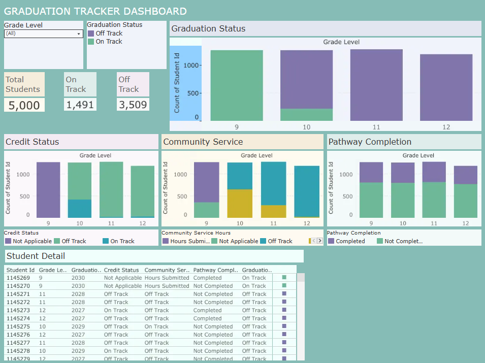

Graduation Tracker
An end-to-end educational analytics project designed to consolidate graduation-readiness signals and make student follow-up needs easier to explore.
Readiness across a synthetic student population

Snapshot from the published Tableau dashboard. All student data are simulated; these figures are not real Pennsylvania graduation outcomes.
Interactive Tableau visualization
Explore the published dashboard below. If the embed is blocked by your browser, use the direct Tableau link above.
From synthetic records to a usable dashboard
01 · Generate representative test data
Used Python notebooks to create synthetic students, course enrollments, course catalogues, graduation requirements, Keystone assessment attempts, Act 158 pathway evidence, community-service activity, and interventions.
02 · Prepare relational data in PostgreSQL
Organized source data into raw, clean, and analysis schemas. SQL scripts handle type conversions, relational keys, joins, validation checks, and reusable analytical views.
03 · Apply business rules
Built views for earned subject credits, verified community-service totals, pathway evidence, assessment-based eligibility, and intervention monitoring. The dashboard presents student-readiness categories for exploration.
04 · Visualize and communicate
Published the Tableau dashboard to help viewers examine graduation status, credit readiness, community service, pathway completion, and student-level records.